Sign in with your Big Grove Google account to view the scorecard.
| Measure | Definition | Feed | Status |
|---|---|---|---|
| Taproom revenue, goal | Net sales after discounts, before tax and tips; goal is the monthly location target spread over the days of the week | Store Director Portal — Toast orders, inputs/targets.csv | Available |
| Brewery distro revenue, goal | Wholesale revenue for the week, prior year and goal | Revenue: Ekos invoices (Liberty + Gilbert), line totals excluding keg deposits, by delivery date, complete weeks since May 2026 — Sales Portal daily Ekos download. Goal and prior year: Leadership Scorecard workbook, Brewery row. | Available |
| Revenue goals | Weekly goal per taproom and for the brewery | Leadership Scorecard workbook, Revenue by Location | Spreadsheet |
| Revenue mix | Food and beer from Toast sales categories; events from Tripleseat; other = the rest of net sales | Store Director Portal — Toast + Tripleseat | Available |
| Food cost %, COGS % | Purchases ÷ sales (food purchases ÷ food sales; all purchases ÷ net sales). A purchasing proxy, not counted usage | Store Director Portal — MarginEdge invoices | Provisional |
| Direct labor % | Hourly labor cost (regular + overtime at 1.5×) ÷ net sales | Store Director Portal — Toast time entries | Available |
| Prime cost % | COGS % + direct labor %, weighted by sales | Derived | Provisional |
| Guests, avg check | Guest count on orders; net sales ÷ guests | Store Director Portal — Toast | Available |
| Google rating, reviews | Each taproom’s score for the week, review counts | Leadership Scorecard workbook, “2026 Leadership Scorecard” tab (typed in weekly) | Spreadsheet |
| Distribution volume, brand progress | Distributor depletions to retail in case equivalents, year to date vs same span last year | Sales Portal — VIP Rolling Scorecard export | Available |
| In-state / out-of-state growth | YTD case growth for the home state and for everywhere else | Sales Portal — VIP Rolling Scorecard export | Available |
| POD count | Points of distribution in and outside Iowa, vs prior year | Sales Portal — VIP Yearly Distributor Data (effective placements, YTD vs same period LY, by distributor state). The sheet's Pod Count uses a different definition. | Available |
| Growth and brand goals | In/outside-Iowa growth goals; full-year brand CE goals | Leadership Scorecard workbook, “2026 Leadership Scorecard” and “Top Priorities” tabs | Spreadsheet |
| Holiday pacing | Cumulative guests at the pop-up taprooms by week vs goal and last season | Goal and last season: workbook “VMBG Targets” tab. This season: Store Director Portal — Toast guests | Sheet + feed |